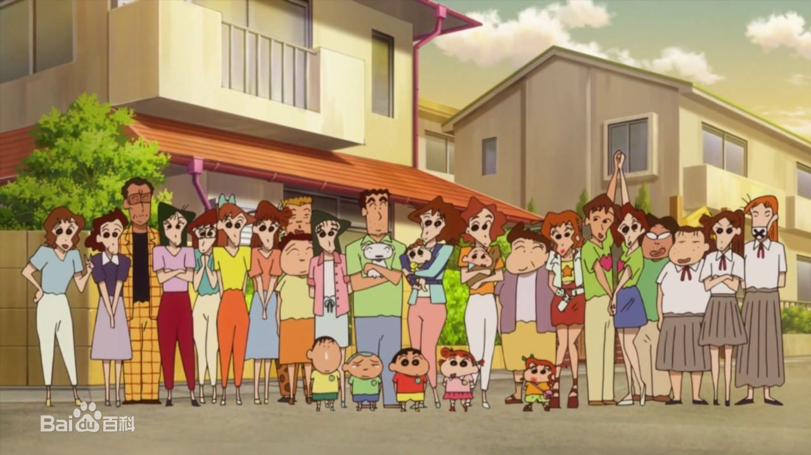
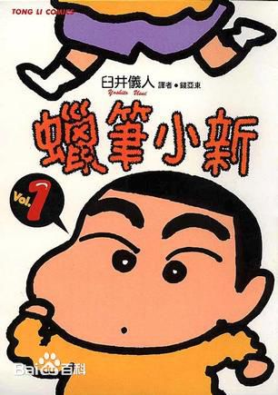
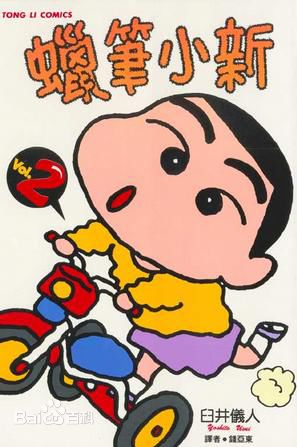
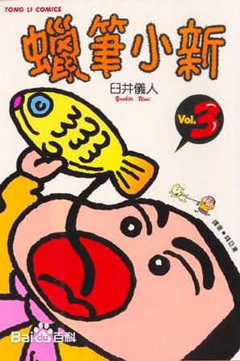
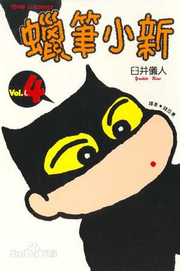
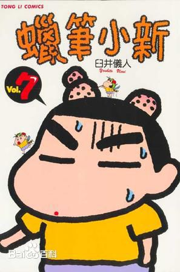

蜡笔小新一大家
- 
分卷剧情
-

蜡笔小新第一卷
「我和妈妈朋友的转载篇」
「幼稚园篇」调皮又好色的小新总是不断地惹麻烦，妈妈不在家时便把家里搞得乱七八糟；去百货公司时又爱搭汕漂亮的大姐姐；去海边游泳时又为了搏取大姐姐的好感，而把妈妈的泳衣给脱了下来，害妈妈丑态百出；在幼稚园的向日癸班上课时，连外表长得像坏人的园长也逃不了小新的魔掌。
-

蜡笔小新第二卷
「我和妈妈是朋友的转载篇」常学爸爸的口气对妈妈说话的小新，免不了被妈妈揍一顿，某天小新的妈妈教他擦屁股的方法，结果遭殃的是厕所的马桶……爱到书店看写真集的小新，遇到精神的店长和女店员时，仍然搞得大家人仰马翻。动感幼稚园所举办的马拉松大赛终於到来了，小新为了这次的比赛可说是加紧练习，但到比赛当天，小新居然脱队，和大家往相反的方向跑……
-

蜡笔小新第三卷
「オラ、しんちゃん とってもよい子だヨ编」
「オラは幼稚园の人気ものだヨ编」小新每次回家都不先喊「我回来了」，所以妈妈常使出绝招对付他。某天赏樱花时，因找不到空位而和妮妮的家人挤在一小块区域，顽皮的小新这下子又惹出麻烦，让妮妮心目中温柔的妈妈和爸爸变了模样。每天上学都会迟到的小新，让妈妈头痛到几乎每天都得骑脚踏车送他上学，某天小新难得坐上幼稚园车，结果又忘了带最重要的便当。
-

蜡笔小新第四卷
「しんちゃんパワーは今日も全开だ编」地狱的女推销员久里代，第一次到某条住宅街推销时被小新摆了一道，因此当她再度踏上这块土地时，誓言要让小新的爸妈花大钱买学习书和卡带，没想到跟著小新后面的久里代误闯民宅，最后落得连滚带爬的下场，导致久里代好一阵子都不敢再靠近那条街了。小新的爆笑威力又再度全开……
-

蜡笔小新第五卷
「オラは幼稚园のスーパーヒーローだ编」小新和爸妈来到动感火车寿司店吃寿司，正当小新爸爸要倒车时，小新竟然挡住爸爸的视线，结果把停车场的墙壁给撞裂，保险杆也撞坏了；接著吃到一半时，小新为了拿某一盤寿司，而把其他客人叠好的盤子也弄碎，搞得大家互相推托，可怜的小新爸妈从头到尾一直在道歉。调皮捣蛋的小新又会怎麼被修理呢？